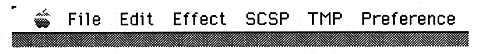
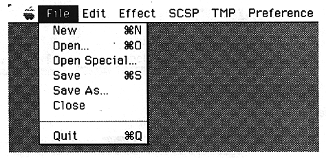

Return to previous page ｜ Return to menu ｜ Go to next page
-
5. Function overview
- This section introduces the waveform editor menu bar, pull-down menu, and control window.
-
Menu bar

-
Pull-down menu
-
Apple menu
- Same as general Apple menu.
-
File menu

Return to previous page ｜ Return to menu ｜ Go to next page